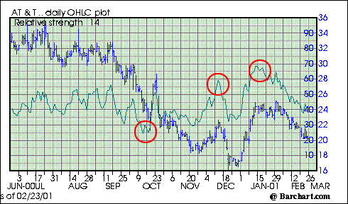

There is an old saying that seems to always apply to the investment world: "hindsight is 20/20". When looking one, three or six months into the past, we can easily tell what the market did and why it happened. But if you are looking to discover the trends of the market today, where do you look?
In this tutorial we will go over various indicators used by traders and brokers to find out where the markets will open and how they will trade throughout the day. This tutorial will include an explanation of S&P 500 futures, the advance/decline line, the relative strength index, the arms index, the price of oil and bonds and the ability of these indicators to detect market strength.
Long-term investors should be warned, however. Over the long term, these day-to-day fluctuations in the markets are nothing to worry about, and for them, the long-term upward drift is much more important.
If you've ever watched financial television before or after the markets open you will probably notice that they often quote the latest index futures price on the "bug" in the bottom corner. The futures market is an important concept and can be used to gauge the trend of the market.
Futures
There are two types of futures contracts, financial and commodities. No matter which type of contract you buy the basic premise is the same. The buyer of the contract agrees to deliver the product (or cash for financial futures) at the contract price on the expiry date. A contract can be on anything from corn, wheat, oil or, in our case, a stock index. It should be noted that a majority of futures contracts get "closed out" before the delivery date and so no physical delivery actually takes place.
The Standard and Poor's 500 index (S&P 500) contains many of the largest companies in the world, so it only makes sense that movement in the direction of the S&P futures is one of the best indicators of overall short-term market direction (Note: The Nasdaq futures are considered a good indicator of technology stocks). The word futures might make this indicator sound confusing but it really isn't. If S&P futures are up, it's an indication that there is upward pressure on the market and the stock market will tend to rise. On the other hand, if S&P futures are down, it's a sign that there is downward pressure on the market and it will likely trend lower.
This rise or decline in the futures contract is usually calculated as a change from fair value. Fair value is the equilibrium price for a futures contract. This is equal to the spot price after taking into account compounded interest and dividends lost because the investor owns the futures contract rather than the physical stocks. This price is determined over the period of the futures contract.
Arbitrageurs
Part of the reason that the markets follow the trend of futures contracts is because of arbitrageurs. An arbitrageur is someone who simultaneously purchases and sells a security (or index) in order to profit from a differential in the price, usually on different exchanges or marketplaces. For S&P futures contracts here is what happens: Suppose the futures contract is trading above fair value (higher), before the market is about to open. An arbitrageur will sell (short) the S&P futures contract and go long (buy) on the underlying stocks within the S&P 500 index. Therefore, the stock prices will increase until the S&P 500 index reaches fair value with S&P futures contract. This sounds like a lot of work but really isn't because of program trading. Using software that monitors both a stock index and futures contracts on the index, traders can be notified when there is a larger than normal gap. This strategy is commonly referred to as index arbitrage.
Popularity
The main reason that S&P futures are so popular for detecting strength is because this contract trades 24 hours a day on financial exchanges around the world. It allows traders and brokers to gauge the futures level before the actual stock markets open for trading which gives a sense of where the market is likely trend at the start of trading.
The advance/decline line (A/D) is a technical analysis tool and is considered the best indicator of market movement as a whole. Stock indexes such as the Dow Jones Industrial Average (DJIA) only tell us the strength of 30 stocks, whereas the A/D line provides much more insight. The formula is quite simple: it is the ratio between advancing stocks and declining ones. If the markets are up but there are more declining stocks than advancing ones it's usually a sign that the markets are losing their breadth or momentum. If the number of advancing issues are dominating the declining issues, the market is said to be healthy.
Unlike the S&P futures contract, this indicator is not necessarily short term. Looking at the A/D line (not just the advance decline ratio) shows us the cumulative trend of advancers to decliners over a particular period of time. Most of the time the stock market does not turn around in an instant. Instead, the markets shift slowly, just as economic, business and market cycles would. This is why the general overall trend of the A/D line is important when determining the strength of the market.
Even so, the advancers to decliners is a tool and not a crystal ball. Sudden market shocks that result from interest rate movements, war, or other drastic events can't be detected by the A/D.
Relative Strength
When talking about the strength of a stock or overall market, one great tool is the relative strength index (RSI) which is a comparison between the days a stock finishes up against the days it finishes down. It is a big tool in momentum trading. Depending on the type of investor, the RSI can be used to detect strength over a couple hours or over several months. Obviously, the longer trends are more valuable to long-term investors, whereas short-term trends in the RSI are popular with traders.
|
RSI = 100 - [100/(1 + RS)] where: RS = (Avg. of n-day up closes)/(Avg. of n-day down closes) n= days (most analysts use 9 - 15 day RSI) |
The RSI ranges from 0 to 100. A stock is considered overbought around the 70 level - a reason to consider selling. This number is not written in stone, in a bull market 80 is a better level because stocks often trade at higher valuations. Likewise, if the RSI approaches 30, a stock is considered oversold - a cause consider buying it. Again, make the adjustment to 20 in a bear market.
A long-term RSI is more rolling and it fluctuates a lot less. Different sectors and industries have varying threshold levels when it comes to the RSI. Stocks of some industries will go as high as 75-80 before dropping back and others have a tough time breaking past 70. A good rule is to watch the RSI over the long term (one year or more) to determine at what level the RSI has traded in the past.
Here we have an RSI chart for AT&T (T). The RSI is the green line and its scale is the numbers that go from 0 to 100. Notice that the RSI was approaching the 60-70 level and then the stock (blue line) sold off, both in December and January. Also notice around October when the RSI dropped to 25 the stock climbed up nearly 30% in just a couple of weeks.
Arms Index (TRIN)
The Arms Index is commonly referred to on financial television and short-term trading websites. Arms is a market performance indicator that varies from the A/D and RSI because instead of simply looking at the number of up and down ticks (or stocks) the Arms Index weighs each stock by the volume traded for each issue. A ratio of one means that the market is in balance. A ratio above one indicates that more volume is moving into declining stocks. A ratio below one indicates that more volume is moving into advancing stocks.
Both the RSI and Arms are great little indicators that can help you detect the overall strength of the market. Most investors agree that the RSI and Arms is most effective in "backing up" or increasing confidence before making an investment decision.
The price of oil and bonds as they relate to market strength is a wide topic, but these are two areas tend to have a large influence over the markets. In this section, we will address the basics of using the prices of these vehicles to determine market strength.
Oil
Energy is one commodity that affects every company in one way or another. For example, the price of wheat makes a greater impact on agriculture stocks, but oil influences everything from the cost of electricity and heating, to the cost of production and transportation. When the price of commodities, and particularly oil, is on the rise it signals that inflation is starting to become apparent. The day-to-day price fluctuations won't cause inflation fears, but the long-term trend will. If the price of oil has been steadily increasing, it could cause investors to be fearful that inflating energy prices will slow company profits.
The price of oil has an opposite effect on those stocks directly influenced by the price of oil. Drilling, pipeline and retail distribution of energy stocks tend to have an extremely high correlation to the price of oil.
Bond Prices
Ten and 30 year bonds, along with interest rate futures are another indicator used by many investors to gauge the strength of the stock market. As you may already know, if bond prices are going up, then yields are decreasing. This decrease in yields causes investors to search for other areas in which to invest their money at a higher return - this usually means the stock market. On the other end of the equation, lower bond yields means that interest rates are low and companies will find it much cheaper to borrow money and finance expansion or growth.
While bond and oil prices might not be as accurate and current as the S&P 500 futures, they are the useful when looking at the overall condition of the economy and, more importantly, at the trend of the stock market.
The usefulness of these indicators depends on what type of investor you are. Long-term investors shouldn't care too much if the S&P futures are up or down before the markets open, whereas traders and short-term investors find this type of information key.
Regardless of what type of investor you are, knowing the overall trend of the market over several months is beneficial. It doesn't mean you should trade on the basis of this trend, but if you are informed you may be able to protect your assets.
Here's a quick recap of what we've learned:
{kind=link}